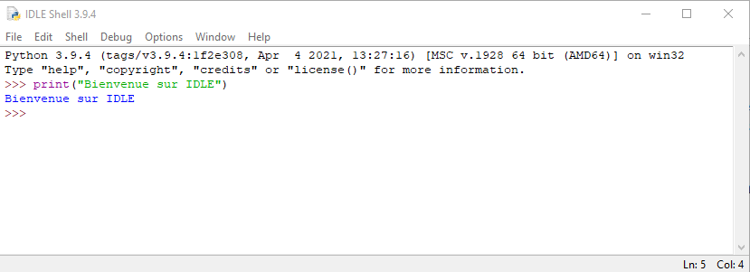
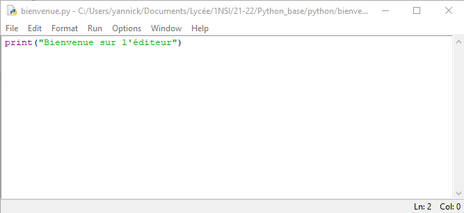
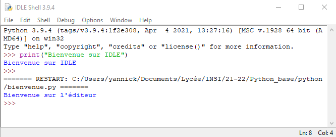
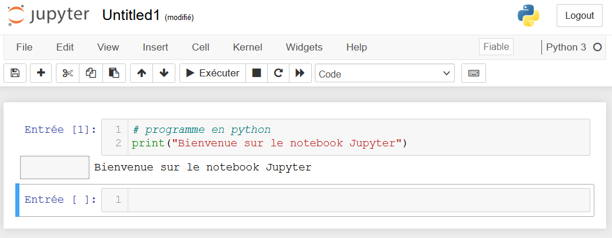
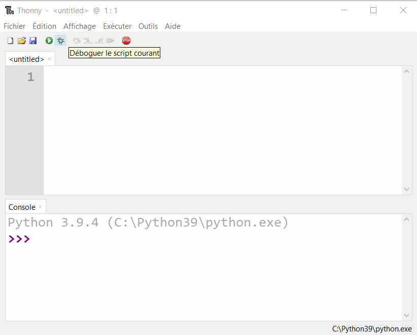

Un éditeur et un interpréteur#
IDLE Python#
Le langage python utilise un interpréteur pour exécuter les programmes. C’est lui qui s’ouvre lorsqu’on lance python dans la liste des programmes sous le nom IDLE Python ou alors depuis un terminal par la commande python.
{kind=link}
Note
On reconnaît facilement l”interpréteur car la ligne commence toujours par >>>.
Pour écrire les programmes sur plusieurs lignes, on utilise un éditeur. Il faut un éditeur qui reconnaît le langage python pour que la syntaxe soit colorisée. L’interpréteur dispose d’un menu qui permet d’ouvrir l’éditeur par le menu File -> New File.
Une nouvelle fenêtre apparait! C’est l’éditeur et c’est dans celle-ci qu’on saisira nos programmes.
{kind=link}
Il seront lancés par un appui sur la touche F5 après avoir enregistré son fichier dans son espace de travail.
{kind=link}
Notebook CAPYTALE#
Un notebook est une application web qui permet de faire de la programmation en python (et aussi avec d’autres langages) dans un navigateur web comme firefox ou chrome.
La page web propose des cellules pour écrire ses programmes en python.
{kind=link}
Sur l’ENT en accédant à l’application web CAPYTALE, vous pourrez créer des notebook.
Logiciel Thonny#
Thonny est un logiciel très léger qui embarque sa propre version de Python.
{kind=link}
Note
il possible d’utiliser la version de Python installée sur la machine. Il faut modifier un paramètre dans le menu outils.
La fenêtre se décompose en 2 parties au moins:
La partie édition en haut qui permet de saisir son script;
La partie interpréteur qui exécute le script.
D’autres fenêtres peuvent s’ajouter en passant par le menu Affichage comme la fenêtre des variables qui donnent l’état des variables du programme en cours.